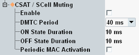

Carrier-sensing adaptive transmission (CSAT) is defined by the LTE-U Forum for the SCC DL in unlicensed bands. With CSAT, the DL transmission is adapted depending on how busy the channel is. Furthermore, regular signal OFF periods allow others to use the channel.
In an OFF period, the SCC DL (SCell) transmits nothing, not even reference or synchronization signals. In an ON period, it transmits reference signals and user data or the MIB or an LTE-U discovery signal (LDS).
To simulate an SCC DL signal with CSAT, the signaling application supports LDS transmission and SCell muting with alternating ON and OFF periods. You can configure the ON and OFF duration and the periodicity of the LDS transmission. Option R&S CMW-KS525 is required.
You can use the feature for any bands, not only for unlicensed bands. The supported ON and OFF durations are more flexible than defined by the LTE-U Forum. The MIB is transmitted with a fixed periodicity of 160 ms.
CSAT and SCell muting cannot be combined with frame structure type 3.

Enables CSAT and SCell muting.
Remote command:The signaling application transmits an LTE-U discovery signal (LDS) with the configured periodicity. The information is signaled to the UE in the R12 DRS DMTC IE.
Remote command:The SCC DL signal is alternating ON and OFF. The settings define the duration of the ON and OFF periods.
The actual ON state duration can be greater than configured, if an LDS or MIB transmission occurs in a subframe immediately after the configured ON period.
To ensure a DL signal during ON periods, you can for example use MAC padding, see "Downlink MAC Padding".
Remote command:Enable the checkbox if you want to activate / deactivate the MAC for each ON / OFF period. With disabled checkbox, the MAC is kept enabled.
With enabled checkbox, the signaling application sends an activate message eight subframes before the start of each ON period. It sends a deactivate message eight subframes before the start of each OFF period.
Remote command: